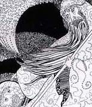

The Wizard-pen and ink
Dragon's Journey-colored pencil
Huipile Pair-colored pencil
Middle Earth 1
Middle Earth 2
 Dragon's Journey-colored pencil
Dragon's Journey-colored pencil Huipile Pair-colored pencil
Huipile Pair-colored pencil Middle Earth 1
Middle Earth 1 Middle Earth
2
Middle Earth
2 back
home
back
home